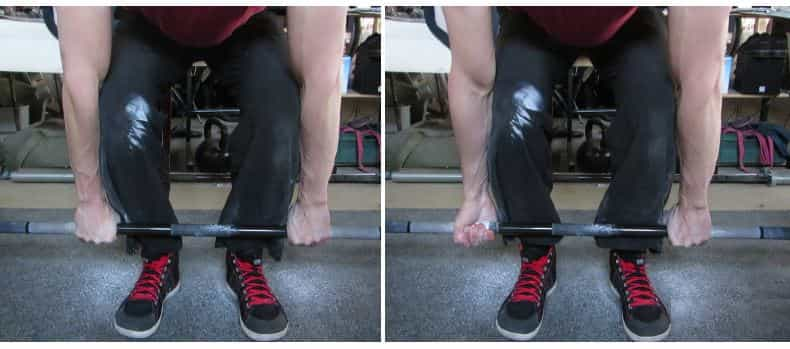

I have repeatedly gone on record saying that when it comes to weightlifting, there are only four lift exercises that you absolutely need to do, and this opinion is shared by many other fitness coaches and fitness enthusiasts.
Colloquially being known as the “big four” lifts, I have already discussed two types of presses that will cover almost all of your upper body needs. But the upper body is, of course, only half of the story. To be a truly strong and fit man, you have to work out your lower body as well, in a way that will make your legs, waist, hips, and core both functional and aesthetically pleasing. And, as luck would have it there are only two simple-but-difficult exercises you need!
Why Work Out Legs?
Some people, particularly the novice lifter, might ask why they have to work out their lower body at all. After all, nobody flexes their legs, people only care about the upper body, correct?
I’m not going to go into how effeminate the idea of working out purely to look good is, or how proprioceptive neuromuscular function means that if your legs are strong, it can only make your upper body stronger as well.
Instead, I’m going to point out the obvious: you stand on your legs and you are on your feet for a substantial amount of your day, regardless of whether you are a manual laborer or a cubicle jockey. Almost every motion you do that is remotely athletic is done while standing on your feet: walking, running, kicking, dancing, jumping—it all involves your legs and feet directly. And many more movements, like punching, throwing, and weightlifting, indirectly use the legs. Simply put, if you want to do any of these effectively, you’re gonna have to target them with strength training.
The only two lower body exercises you absolutely need to do are the squat and the deadlift. And while they’re both very useful—I did teach you to squat first, after all—I would recommend the deadlift as the more important of the two, because while the squat will hit every muscle below and including the lower back, the deadlift will hit 90% of those same muscles, and provide a pretty solid exercise for the upper body as well. More specifically, the deadlift will predominantly hit the trapezius muscles and the muscles of the forearm and hands. And you are all quite aware of how much importance I place on strengthening the hands and forearms. All in all, who doesn’t want to work out most of their body with just one exercise?
How To Deadlift
The first thing you absolutely need to learn to do the deadlift is how to “hollow” the back, or as I prefer to call it, “lock” the back. This technique keeps the back tight and straight during the deadlift, which is imperative to do because otherwise you can risk pretty severe back injury.
Stand with your feet shoulder width apart, then exaggeratedly “Stand at attention”—imagine your body lengthening and straightening like a soldier in an old cartoon (laugh if you must, this metaphor helped me visualize the proper position). Feel your chest puff out and your lower back tense. This back tightness is the feeling you want to maintain throughout the deadlift.
Alternatively, you can bend to grasp the bar in your hands and then lock the back. The above is what works for me, but if you want to do it the other way, that’s fine.
Once you have familiarized yourself with that feeling, you can do the deadlift—and for the sake of your back it is imperative you master this body position before you even try to lift. Place the bar on the floor and load it with whatever weights you need. Roll the bar to your shins.
Then lock the back, keep the head and neck tight and looking forward—this helps with proper spinal alignment. While maintaining this locked position, keep your arms straight and begin bending at the knees to the bar. Do what feels natural and bend until your hands can grip the bar. Do not bend at the back or move your shoulders.
From here, you can grasp the bar with both palms facing towards you, or do alternating grips. I find that both palms towards the lifter works the forearms better but again, whatever is comfortable for you.

Now you can begin lifting; maintain the total body tightness and lift with your legs. You should feel as if you are pushing through the floor, which is why I recommend that you do this barefoot if your gym will allow you to do so. Push from the floor and the weight should begin to move. Continue pushing until your legs are straight . The bar should be about at your knees.
Then, clench the buttocks and straighten out at the back and hips, making sure to keep them both tight and straight. The bar should finish at about your hip level.
To release the weight, do not drop the weights like an asshole. Instead, just do a reversal of the lifting motion. Lock the back and bend at the waist until the bar reaches your knees. Then bend at the knees until the bar touches the ground.
Any more advice?
Form is imperative! If you feel any pain in doing this exercise, whether it be in your back or your hips, stop immediately, lower the weight, and work on your form. I give this advice especially for the deadlift, as improper form can lead to slipped discs and broken backs. Bridging can only protect you so much.
And with that, the big four lifts are yours. Enjoy being stronger than most in your gym.
Read More: How To Work Out The Lower Half Of Your Body Using Isometric Exercises